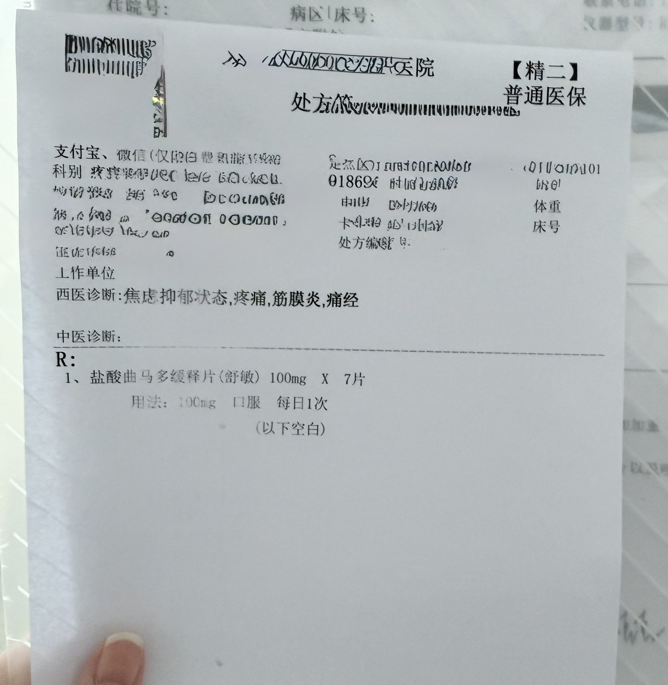
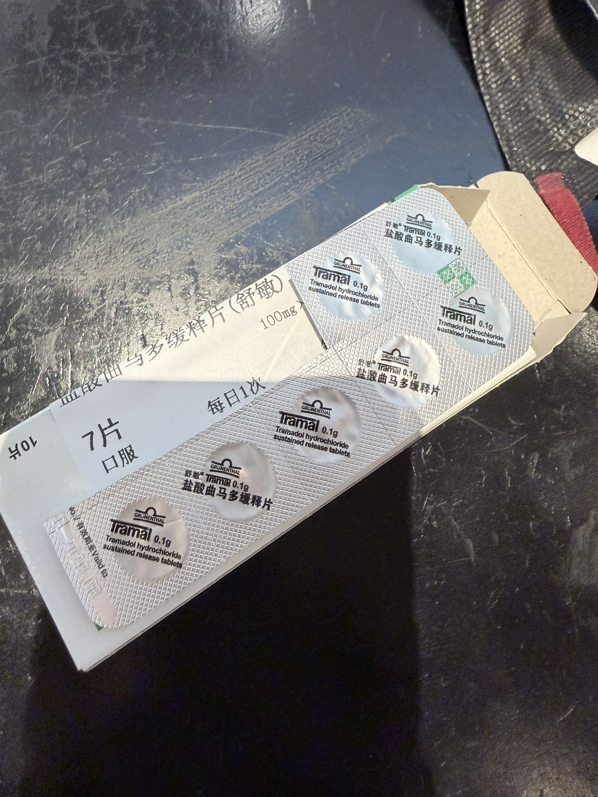
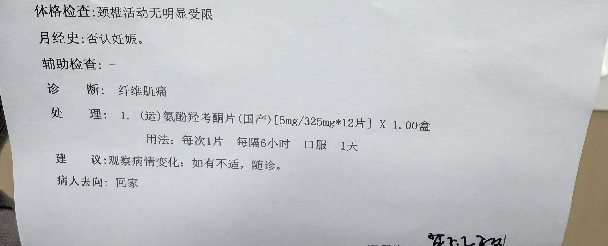
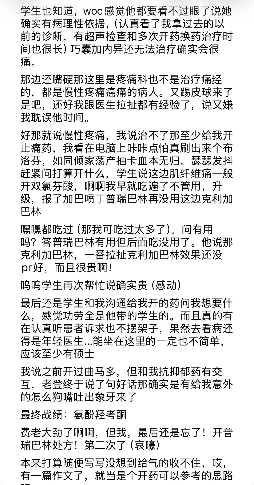

还是被上一个地方推荐过来的，报了不小期望，现在想来大概也是多少有点踢皮球的心理吧…？






有救了..！但是和auv冲突了…cyp2d6被ban的不剩一点，吃个dxm能晕完第二天。陷入沉思…
差点开依托考昔出来，我报了一遍吃过的菜名，医生说吃没吃过抗抑郁药吃过哪些，我又报了一遍菜名，然后继续踢皮球说原发性痛经妇科比较有经验，我说妇科的方法我用不了会抑郁发作，拉扯半天终于妥协 https://t.co/IHCrUWrCjA
差点开依托考昔出来，我报了一遍吃过的菜名，医生说吃没吃过抗抑郁药吃过哪些，我又报了一遍菜名，然后继续踢皮球说原发性痛经妇科比较有经验，我说妇科的方法我用不了会抑郁发作，拉扯半天终于妥协 https://t.co/IHCrUWrCjA
怎么南方疼痛中心国家重点专科的诊室都拿我没办法…好绝望，慢性疼痛得意洋洋对我说你就受着罢。
挂专家号受气，本来想200字内随便讲讲，收不住笔写了篇作文，但或许可以为同样被严重痛经/慢性疼痛困扰的人提供一点开药思路与话术
还有我又忘记要普瑞巴林处方了！啊！！第二次！气死我了 https://t.co/uQDxR7UDs2
挂专家号受气，本来想200字内随便讲讲，收不住笔写了篇作文，但或许可以为同样被严重痛经/慢性疼痛困扰的人提供一点开药思路与话术
还有我又忘记要普瑞巴林处方了！啊！！第二次！气死我了 https://t.co/uQDxR7UDs2